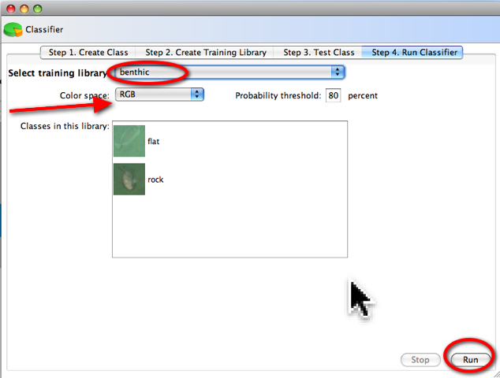
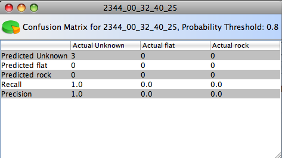
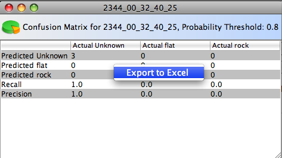

Automated
Visual Event Detection and Classification
AVEDac
Classifier Step 3. Run Classifier
Running
This is the longest step of the four steps. In this step, you need to minimally select a training library to run. The probability threshold sets the threshold a pattern must match.| Changing the Color space will show available training libraries in that color space |  |
Once the testing is complete, you
will see the results from the training in the form of a Confusion
Matrix:

